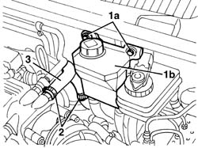
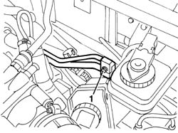
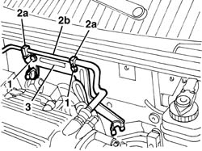
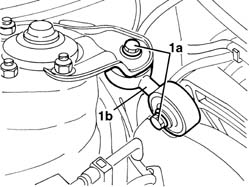
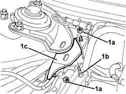
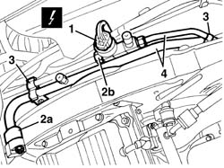
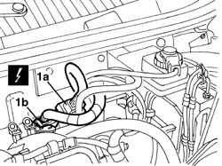
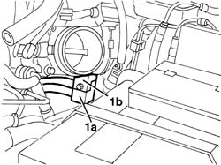
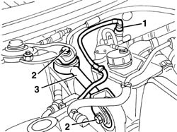
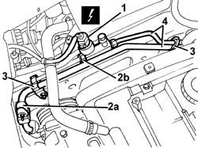

5040A78 Supply and return PIPE to'EVAPORATOR - R.R.
- Path
- Procedures > 50 AUXILIARY UNITS > 5040 AIR CONDITIONING CASING AND COMPONENTS > 5040A air conditioner coolant circuit > 5040A78 Supply and return PIPE to'EVAPORATOR - R.R.
- Kind
- repair procedure (removal / refitting; the operation number is the code)
- Applies to
- engines: 2.0 JTS, 2.5 V6, 3.2 V6, 2.0 JTS; all production periods
- Interactive page
- https://sloeber94.github.io/elrnDB-a156/en/#/3238322
Applies to: engines: 2.5 V6, 3.2 V6; production: da 03/02 a 09/03, da 10/03; only with equipment: Air Conditioner
 Removing
Removing
 Refitting
RefittingDrain the coolant ( 5040A10 Air conditioning refrigerant CIRCUIT - Draining and Refilling ).
1. Undo the bolt (1a) and move the power assisted steering fluid reservoir (1b).
2. Loosen the bands.
3. Remove the brake servo vacuum pipe.

Applies to: engines: 2.5 V6, 3.2 V6; production: da 03/02 a 09/03, da 10/03; only with equipment: Air Conditioner
1. Undo the fixing bolt and disconnect the pipes from the air conditioning casing.

Applies to: engines: 2.5 V6, 3.2 V6; production: da 03/02 a 09/03, da 10/03; only with equipment: Air Conditioner
1. Undo the bolts.
2. Disconnect the bands (2a) from the petrol vapour recirculation pipe (2b).
3. Remove the bracket.

Applies to: engines: 2.5 V6, 3.2 V6; production: da 03/02 a 09/03, da 10/03; only with equipment: Air Conditioner
1. Working on the right side of the engine compartment, undo the bolts (1a) and remove the reaction connecting rod (1b).

Applies to: engines: 2.5 V6, 3.2 V6; production: da 03/02 a 09/03, da 10/03; only with equipment: Air Conditioner
1. Undo the nuts (1a) and the bolt (1b), then remove the reaction connecting rod bracket (1c).

Applies to: engines: 2.5 V6, 3.2 V6; production: da 03/02 a 09/03, da 10/03; only with equipment: Air Conditioner
1. Working on the right side of the engine compartment, disconnect the electrical connection.
 | Name | Connector |
|---|---|---|
1 | 4 stage pressure switch |
2. Disconnect the couplings (2a) and (2b) for the evaporator supply and return pipes.
3. Disconnect the bands from the pipes.
4. Remove the supply and return pipes from the evaporator.

Applies to: engines: 2.5 V6, 3.2 V6; production: da 03/02 a 09/03, da 10/03; only with equipment: Air Conditioner
Refitting
RemovingCheck that the pipes are not damaged and that there are no cracks which would affect the seal.
Position the pipes and connect them to the bodyshell using the retaining bands.
Working on the right side of the engine compartment, connect the couplings for the evaporator supply and return pipes.
Place the reaction connecting rod bracket in position and tighten the bolt and the nuts.
Place the reaction connecting rod in position and tighten the bolts.
Position the bracket and connect the bands to the petrol vapour recirculation pipe.
Tighten the bolts.
Connect the pipes to the air conditioning casing and tighten the fixing bolt.
 | Fastening | Component | Ø | Value (daNm) |
|---|---|---|---|---|
- | Bolt | PIPE CONNECTOR | M6 | 0.9 |
Refit the brake servo vacuum pipe and secure it using the bands.
Place the power assisted steering fluid reservoir in position and tighten the bolts.
Repressurize using coolant fluid ( 5040A10 Air conditioning refrigerant CIRCUIT - Draining and Refilling ).
Applies to: engines: 2.0 JTS, 2.0 JTS; all production periods; only with equipment: Air Conditioner
Removing
RefittingDrain the coolant ( 5040A10 Air conditioning refrigerant CIRCUIT - Draining and Refilling ).
Remove the upper engine cover and the duct from the air filter to the throttle casing.
1. Detach the electrical connections (1a) and (1b) from the supports, then disconnect them.
| Name | Connector |
|---|---|---|
1a | Front/engine connection |
| Name | Connector |
|---|---|---|
1b | Front/engine connection |

Applies to: engines: 2.0 JTS, 2.0 JTS; all production periods; only with equipment: Air Conditioner
1. Undo the fixing bolt and disconnect the pipes from the air conditioning casing.

Applies to: engines: 2.0 JTS, 2.0 JTS; all production periods; only with equipment: Air Conditioner
1. Working on the right side of the engine compartment, disconnect the petrol vapour pipe and move it.
2. Undo the bolts fixing the reaction connecting rod.
3. Remove the reaction connecting rod.

Applies to: engines: 2.0 JTS, 2.0 JTS; all production periods; only with equipment: Air Conditioner
1. Working on the right side of the engine compartment, disconnect the electrical connection.
| Name | Connector |
|---|---|---|
1 | 4 stage pressure switch |
2. Disconnect the couplings (2a) and (2b) for the evaporator supply and return pipes.
3. Disconnect the bands from the pipes.
4. Remove the supply and return pipes from the evaporator.

Applies to: engines: 2.0 JTS, 2.0 JTS; all production periods; only with equipment: Air Conditioner
Refitting
RemovingCheck that the pipes are not damaged and that there are no cracks which would affect the seal.
Position the pipes and connect them to the bodyshell using the retaining bands.
Connect the couplings for the evaporator supply and return pipes.
Connect the electrical connection.
Place the reaction connecting rod in position and tighten the bolts.
Connect the petrol vapour pipe.
Connect the pipes to the air conditioning casing and tighten the fixing bolt.
| Fastening | Component | Ø | Value (daNm) |
|---|---|---|---|---|
- | Bolt | PIPE CONNECTOR | M6 | 0.9 |
Connect the electrical connections and fasten them to the supports.
Refit the air duct and the engine cover.
Repressurize using coolant fluid ( 5040A10 Air conditioning refrigerant CIRCUIT - Draining and Refilling ).